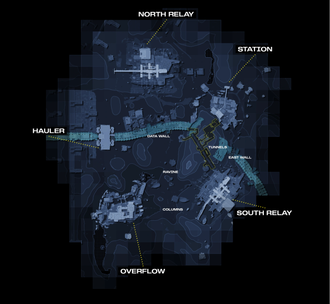
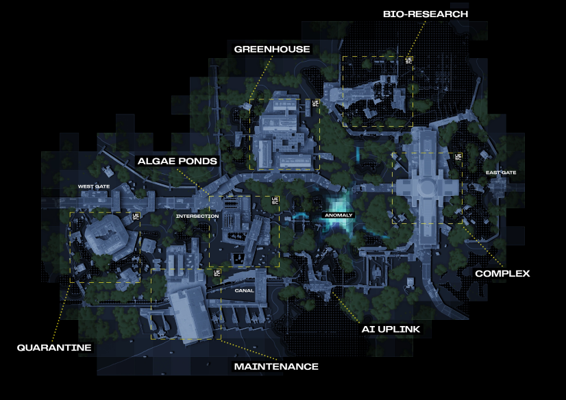
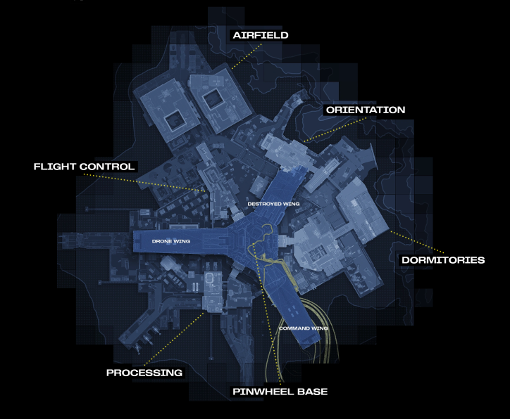
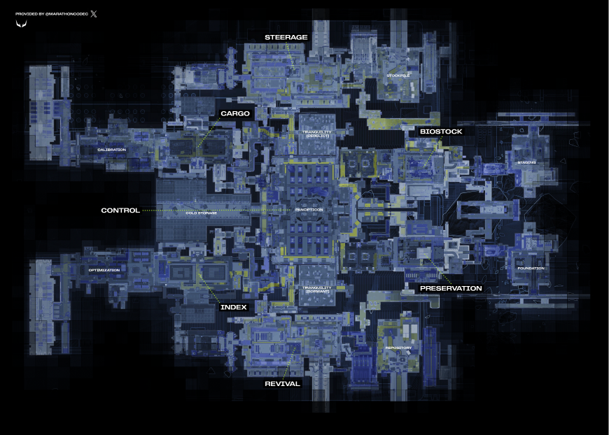

PERIMETER là map đầu tiên người chơi được làm quen với. Không gian ngoài trời thoáng đạt rộng rãi, những điểm nóng trên bản đồ được sắp xếp cạnh nhau không quá xa và bố cục kiến trúc tương đối đơn giản. Tất cả điều này tạo nên một không gian phù hợp cho người mới chơi giúp người chơi không bị choáng ngợp.

DIRE MARSH là bản đồ thứ hai người chơi được tiếp cận và có 2 phiên bản khác nhau: DIRE MARSH map ban ngày và NIGHT MARSH map ban đêm. Các điểm nóng được sắp xếp dàn đều xuyên suốt toàn bản đồ. Không gian ở đây rộng mở gần gấp đôi map PERIMETER, điều này khiến người chơi cần có tính toán trước khi di chuyển. Những kiến trúc của những điểm nóng đã có độ phức tạp nhất định, những đường hầm dưới lòng đất, mật độ kẻ địch UESC dày đặc hơn đòi hỏi sự tập trung của người chơi.

OUTPOST là bản đồ thứ ba được giới thiệu. Đây là map với diện tích nhỏ nhất tính đến hiện tại. Bù lại vào đó, OUTPOST có sự tách biệt hai tầng không gian: dưới mặt đất sẽ là những điểm nóng thông thường tìm thấy trong hai map trước như Flight Control, Airfield, Orientation, Dormitories, Processing, còn trên bầu trời sẽ là Pinwheel Base, nơi thường chứa những vật phẩm quý hiếm hơn. Để truy cập tầng trên Pinwheel Base thì có nhiều cách nhưng cách phổ thông nhất đó chính là sử dụng hai chiếc thẻ xanh được rải rác khắp nơi suốt map. Điều này thúc đẩy người chơi phải di chuyển và tìm hiểu bản đồ, từ đó tăng khả năng tương tác giữa người với người. Kết hợp với diện tích vốn nhỏ của bản đồ khiến mức độ aggressive của map tăng cao.

CRYO ARCHIVE đang là map có độ khó cao nhất. Với vô vàn những con đường ẩn dấu xung quanh khắp bản đồ. Để di chuyển xung quanh và mở cửa, người chơi cần thu thập những chiếc thẻ Security Credentials (gọi tắt là Cred) để tăng cấp độ bảo mật của mình và mở những cánh cửa hệ thống bảo mật cao hơn. Đây là một map đồ sộ, không chỉ rộng lớn mà còn ẩn chứa nhiều ngóc ngách bí mật. Thêm nữa, CRYO ARCHIVE là map có mật độ kẻ địch UESC lớn nhất trong game, khiến cho nơi đây từng căn phòng đều có thể mang đến cái chết bất chợt cho những người chơi không chuẩn bị kỹ. Cuối cùng, đây là map duy nhất trong Marathon đến thời điểm này có một boss cuối với sàn đấu riêng.
